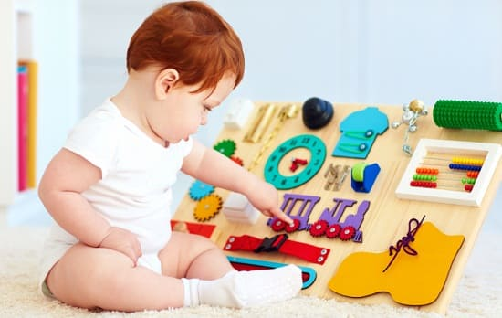
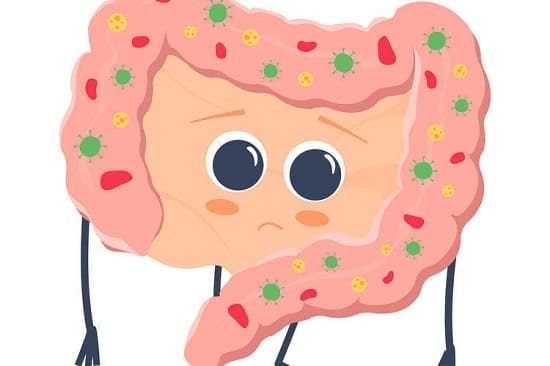
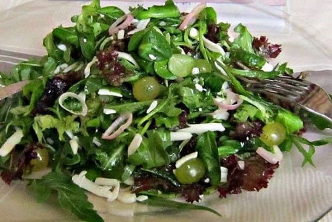

Обычная история звучит примерно так: «Мой пятилетний сын ленится ходить в туалет. Его нижнее белье всегда запачканное. Я ругаю его, а он отвечает: «Папочка, я просто не знаю, когда мне нужно идти в туалет». Звучит знакомо?
Недержание кала, известное в медицине как энкопрез, является распространенной проблемой, когда маленькие кишечники вырастают. Оно намного чаще встречается у мальчиков — мальчики в любом возрасте уделяют меньше внимания сигналам своего тела, и это в большей степени проблема механическая и проявление незрелости, чем психологическое нарушение.
ПРИЧИНЫ
Во-первых, мы хотим, чтобы вы поняли четыре главные причины, почему дети пачкают свои трусики:
Занятые маленькие кишечники. Маленькие мальчики с маленькими кишечниками забывчивы. Они так поглощены игрой, что выключают свои «пора-в-туалет» сигналы.
Ленивые маленькие кишечники. Ребенок стоит в очереди или играет в игру и не хочет терять свое место или останавливать игру, чтобы проходить через все эти неудобства раздевания, одевания и возвращения в игру. Поэтому он игнорирует сигналы.
Смущенные маленькие кишечники. Ребенок находится в классе и может слишком стесняться попроситься выйти в туалет, особенно перед своими товарищами. Вот почему необходимо научить его, что посещение туалета, так же, как и прием пищи, является нормальной частью жизни: «Мамочка и папочка ходят в туалет каждый день, как и твой учитель, и твои друзья».
Забитые маленькие кишечники. Вас может удивить то, что, хотя содержимое кишечника «вытекло», причиной этого зачастую является хронический запор. То, что вы видите в дурно пахнущем нижнем белье своего ребенка, «просочилось» под давлением кишечника из плотных каловых масс.

ЧТО ДЕЛАТЬ
Используйте эту физическую неприятность как обучающий момент, чтобы достичь двух целей: во-первых, показать своему ребенку, что вы ценный источник и можете помочь ему преодолеть дискомфортные и смущающие ситуации и, во-вторых, дать ему возможность узнать о важной части его тела. К концу этого урока он, может быть, узнает о здоровье желудочно-кишечного тракта больше, чем любой другой ребенок его возраста. Вы можете адаптировать следующие рекомендации согласно возрасту и степени зрелости вашего ребенка:
1. Поговорите о кишечнике. Играя, рассказывайте и показывайте. Нарисуйте кишечник и объясните ребенку, откуда выходят каловые массы: «Отработанная еда собирается в твоем кишечнике, и ты называешь это какашками. Какашки выходят наружу размером примерно с маленький хот-дог. Вдоль стенок твоего кишечника расположены маленькие нервы, которые говорят тебе о том, что твой кишечник полный. Эти крошечные нервы посылают сигнал вверх, в твой головной мозг. Затем кишечник говорит мозгу: «Мозг, я полный». Мозг отвечает: «Иди в туалет». Это сигнал, что тебе нужно идти. Предположим, что ты слишком занят игрой и не делаешь то, что тебе говорит мозг. Постепенно мозг и кишечник перестают разговаривать между собой. Они перестают дружить. Мозг говорит: «Если ты не хочешь меня слушать, я не буду с тобой говорить». Поэтому ты не знаешь, когда тебе надо идти. Затем какашка начинает расти, иногда даже до размера бейсбольного мяча. Когда твоя какашка большая, как бейсбольный мяч, становится больно какать, а затем еще тяжелее и сложнее. Поскольку какать больно, ты не хочешь какать. Кишечник напоминает мышцу. Если «бейсбольный мяч» продолжает расти, он растягивает мышцы, и мышцы слабеют. Тогда ты действительно в беде, потому что происходят две вещи: нервы слабеют и вообще перестают разговаривать с мозгом, и затем мышцы становятся такими слабыми, что не могут вытолкнуть какашку».
«Также на конце кишечника находится мышца, называемая мышца- сфинктер. Эта мышца сокращается, чтобы не позволить какашке выйти. Однако она становится такой слабой, что она больше не может удерживать какашку внутри, поэтому она просачивается и попадает тебе в трусики. Милый, ты прав, ты часто даже и не знаешь, что тебе надо в туалет, потому что твоя мышца-сфинктер и мышцы твоего кишечника больше не разговаривают с мозгом. Все, что нам остается сделать, это четыре вещи:
Вы хотите прервать этот грязный круговорот: хронический запор рас-тя-ги-ва-ет мышцы кишечника и мышцу-сфинктер. Ребенок теряет ощущение необходимости идти в туалет, и у него подтекает — но он не чувствует этого и не ощущает запаха, поскольку привыкает к этому, что вызывает еще больше запоров и еще больше притупляет ощущение кишечника.
2. Разработайте план эвакуации. Если у вашего ребенка каломазание длится более нескольких месяцев, возможно, у него хронический запор и его кишечные мышцы такие слабые, что вам надо начать хорошую прочистку. Попросите врача обследовать ребенка.
СОВЕТ ДОКТОРОВ СИРС: БУДЬТЕ УЧИТЕЛЕМ, А НЕ СТРОГИМ КОМАНДИРОМ Вы же хотите, чтобы ваш ребенок воспринимал вас как ценный ресурс для знакомства с проблемами с кишечником информативным и полезным способом, а не путем наказания. |
Врач часто может нащупать каловые массы размером с мячик для гольфа в нижнем отделе брюшной полости ребенка (в дополнение к слабому сфинктеру) при ректальном исследовании. Если ваш врач считает, что у вашего ребенка сильный запор, вам, возможно, придется начать лечение с применения клизмы в течение нескольких дней, а затем — принимать слабительные в течение недели. Ваш врач может назначить вам их.
3. Кормите непослушные кишечники. То, что входит в организм сверху, влияет на то, что происходит внизу. Растите маленького жвачного. Попробуйте правило «двоек» доктора Сирса: есть в два раза чаще, в два раза меньше и жевать в два раза дольше. Если пищеварение будет лучше наверху, то будет меньше изнашивания и остатков внизу (в зависимости от уровня понимания вашего ребенка вы можете нарисовать картинку, изображающую меньшее количество еды в желудке, которая разжевывается маленькими порциями, поэтому почти вся пища успевает переработаться, прежде чем она «превратится в какашку»).
4. Снабжайте маленькие кишечники водой. Запомните, одна из ваших целей — помочь ребенку чувствовать себя более комфортно. Убедитесь, что он пьет по меньшей мере 30 граммов воды на 400 грамм веса каждый день. Если стул не выходит слишком долго, вода из него всасывается обратно в кишечник, и стул становится еще тверже, а именно этого вы не хотите. Скажите своему ребенку: «Чем больше воды ты пьешь, тем легче твоей какашке выходить наружу». Дополнительное количество воды особенно важно, если ваш ребенок придерживается диеты, обогащенной клетчаткой (фрукты, овощи и цельные злаки). Диета, обогащенная клетчаткой, при малом употреблении воды может усугубить запор.
5. Смузи смягчают стул. В своей практике мы используем этот «слабящий раствор» для облегчения запора и многих других кишечных дисфункций. Сделайте своему ребенку напиток, который будет содержать по крайней мере три смягчающих ингредиента:
Другими специальными ингредиентами могут быть зерна с высоким содержанием клетчатки, например, столовая ложка шелухи семян псилиума (подорожник блошиный, подорожник блошиный, подорожник песчаный), пшеничных отрубей или пшеничных проростков.
6. Салаты смягчают стул. Поощряйте ребенка есть много салатов с повышенным содержанием клетчатки, состоящих из зелени, нута (турецкого гороха), фасоли, семян подсолнечника и оливкового масла.
7. Двигайте своим кишечником! Двигайте своим телом, чтобы двигать своим кишечником. Если ваш ребенок слишком много сидит, содержимое кишечника тоже сидит.
8. Запланируйте время на посещение туалета. После завтрака и ужина (и после обеда в школе) настоятельно рекомендуйте своему ребенку сидеть в туалете по меньшей мере 10—15 минут. Эта привычка использует собственную биологическую подсказку для кишечника — желудочно-кишечный рефлекс. Когда верхняя часть кишечника наполняется, нижняя часть кишечника получает сообщение, что пора опустошиться.
9. Запустите в кишечник самых лучших «жучков». Хронический запор приводит к плохому здоровью желудочно-кишечного тракта в целом. В здоровом кишечнике живут миллионы полезных бактерий, подобных тем, которые, как правило, содержатся в йогурте. Здоровые бактерии вытесняют вредных, которые зачастую растут в кишечнике при хроническом запоре.

СОВЕТ ДОКТОРОВ СИРС: НЕ БОЛТАЙ НОГАМИ! Когда ребенок сидит на унитазе, поставьте его ноги на подножку. Болтание ногами напрягает сфинктер и затрудняет процесс освобождения кишечника. Запомните, что вы должны помогать ребенку во всем, что от вас зависит. Скажите ему: «Если ты обопрешь ноги на подножку, это расслабит мышцы твоего сфинктера и облегчит процесс». |
10. Помогите ребенку убрать за собой. Поощряйте ребенка, чтобы он вычищал загрязнения со своего нижнего белья и клал его в стиральную машинку. Представляйте это не как воспитательную меру, а как простой и само собой разумеющийся факт, что он должен нести ответственность за поведение своего тела.
Как видите, недержание кала — это в первую очередь механическая проблема, но она может стать проблемой поведения. Ваш ребенок может смущаться, когда другие дети будут говорить: «Вон идет вонючка!», особенно когда «вонючка» не чувствует этого и не ощущает запаха, поскольку он слишком привык к нему. Смущенный ребенок замыкается, прячет свое запачканное нижнее белье и смущается еще больше. Вот почему важно пресечь эту проблему в зародыше, пока она не усугубилась. Вам нужно, чтобы ваш ребенок чувствовал себя комфортно, обращаясь к вам с любой смущающей проблемой. Впоследствии у него может возникнуть множество смущающих проблем, но у вас есть возможность внушить ему следующее: «С какой бы проблемой ты ни столкнулся, я помогу тебе ее решить». Тогда он будет чувствовать себя комфортно и все вам рассказывать. Помогая ребенку справиться с проблемой, вы превращаете ее в возможность своего сближения с ребенком.
Здоровье ребенка от докторов Сирс / Сирс У. и др.